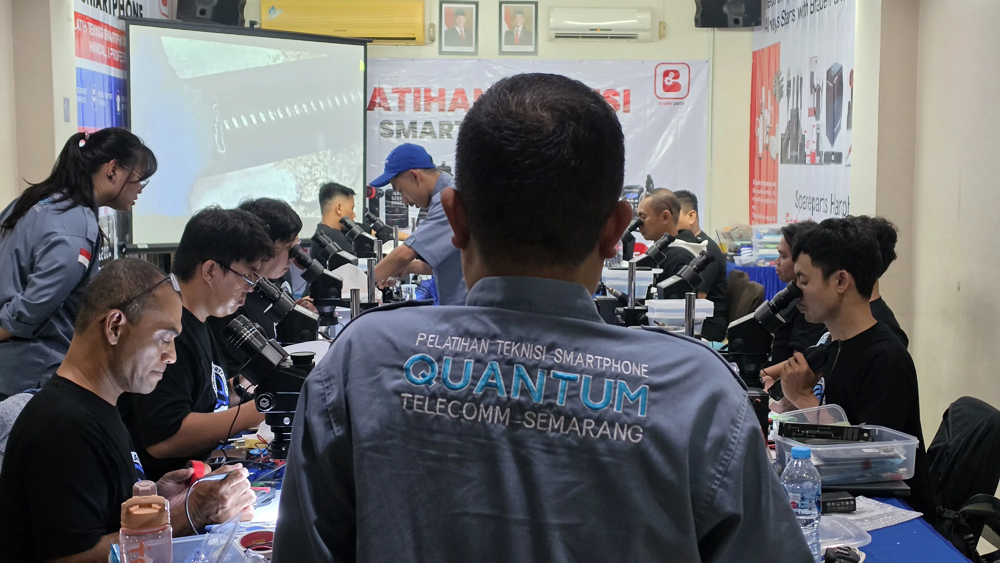
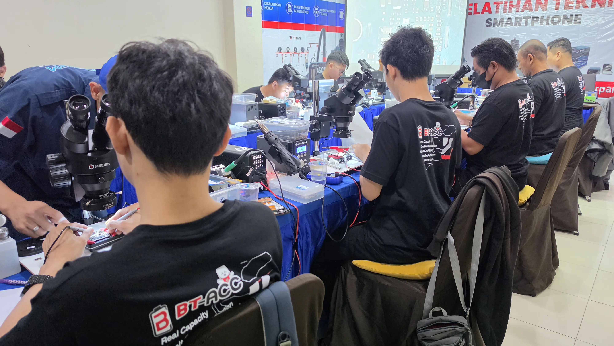
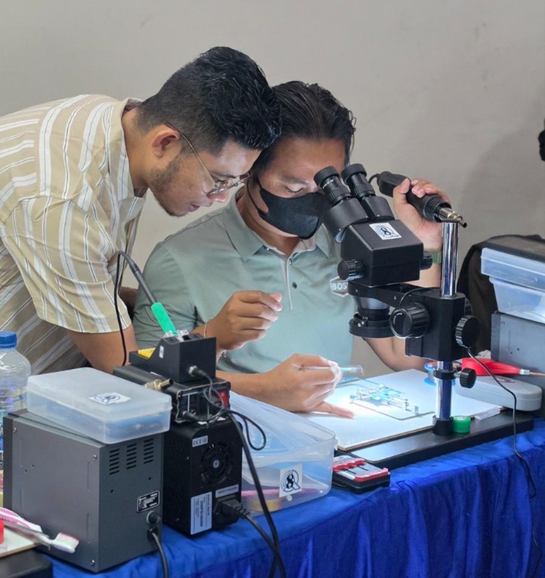
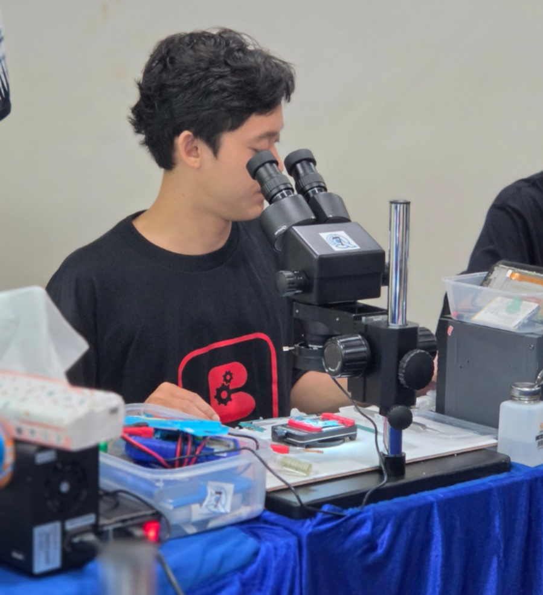
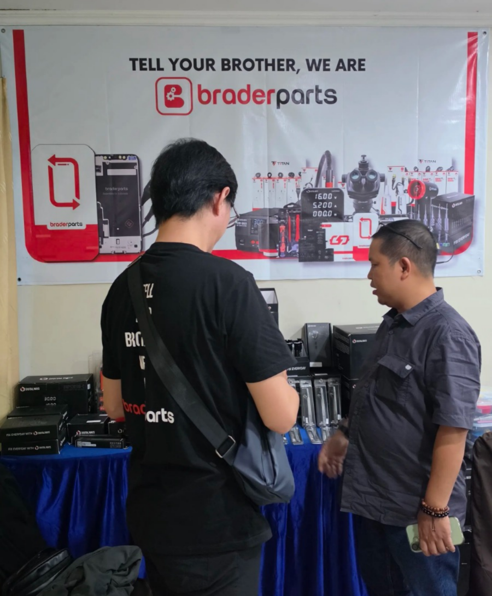
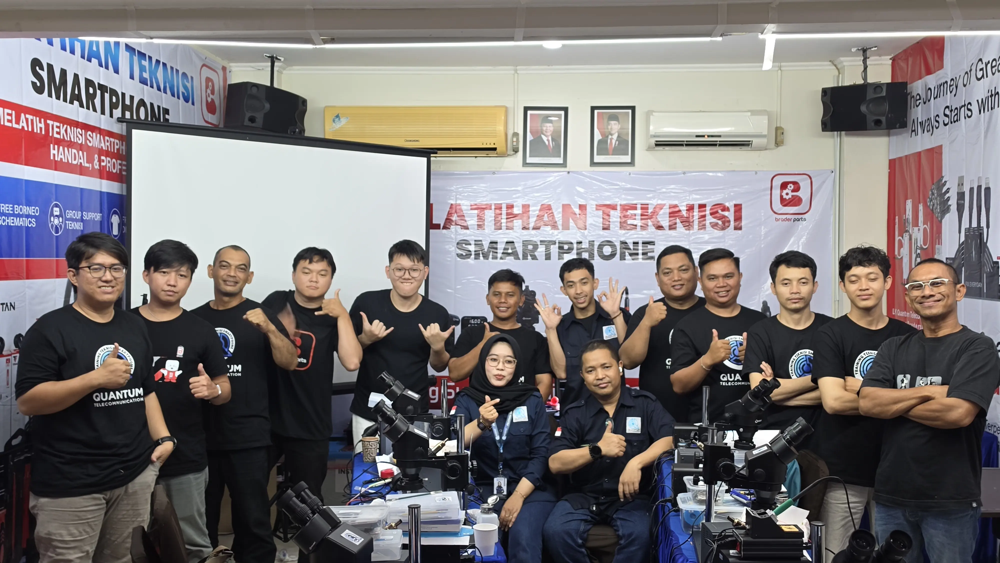

Antusiasme Peserta dari Berbagai Daerah
Sejak hari pertama pelaksanaan, peserta dari berbagai daerah di Kalimantan Barat memadati lokasi pelatihan di Hotel Merpati Pontianak. Antusiasme ini menunjukkan tingginya minat masyarakat untuk memiliki keterampilan yang dapat langsung digunakan untuk bekerja maupun membangun usaha mandiri.

Pertama Kalinya Hadir Kelas Teknisi iPhone di Pontianak
Berbeda dengan roadshow sebelumnya, tahun ini Quantum Telecommunication menghadirkan Kelas Teknisi iPhone untuk pertama kalinya. Program ini menjadi salah satu yang paling dinantikan karena kebutuhan teknisi iPhone terus meningkat di berbagai daerah.

Dukungan Penuh Brader Parts untuk Praktik Peserta
Salah satu keunggulan roadshow tahun ini adalah dukungan langsung dari sponsor utama, Brader Parts. Untuk pertama kalinya, berbagai alat praktik yang digunakan selama pelatihan disediakan langsung untuk peserta. Mulai dari microscope, solder station, blower hot air, power supply, solder wick, flux, ragum PCB, hingga berbagai tools teknisi profesional lainnya digunakan selama proses pembelajaran berlangsung.

Booth Brader Parts Menjadi Pusat Perhatian Peserta
Selain mendukung kegiatan praktik, Brader Parts juga menghadirkan berbagai produk tools dan sparepart secara langsung di lokasi pelatihan. Peserta dapat mencoba, berkonsultasi, dan membeli berbagai kebutuhan teknisi dengan harga khusus serta promo yang hanya tersedia selama kegiatan berlangsung.

Penutupan dan Foto Bersama
Roadshow ditutup dengan sesi foto bersama serta pembagian sertifikat kepada peserta yang telah mengikuti pelatihan. Momen ini menjadi simbol lahirnya calon-calon teknisi baru yang siap berkarier dan membuka usaha di bidang servis handphone.
